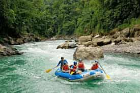
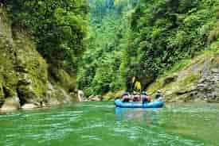
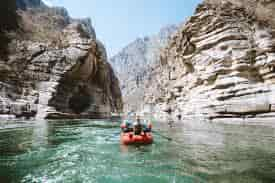
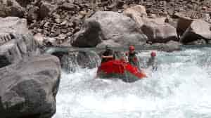
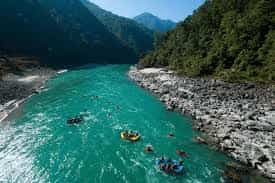
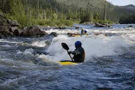

Ready for an adventure? Now is your moment Contact us now!
About Our Trips
Rafting Pacuare
Located on Costa Rica's Caribbean side, the Pacuare River borders the Talamanca Mountain Range, home to the Cabecar Indigenous people and an incredible array of wildlife, including parrots, toucans, deer, jaguars, ocelots, monkeys, butterflies, and more. In addition to the exhilarating Class III-IV rapids, you'll have a tropical adventure filled with magical experiences you'll always remember.
Rafting Pejibaye
Travesías Naturales offers a rafting tour to the Pejibaye River, located in Turrialba, 1 hour and 30 minutes from San José. This tour is especially designed for families who want to share the adventure of rafting with their children. They will enjoy the river and its class II and III rapids, especially for young children and older adults.
Rio Apurimac
The rafting expedition on the Rio Apurímac is not for the faint of heart. The river offers technical, big rapids that will give you at least a few stories to tell. Apart from the incredible three days on the river, you will sleep on sandy beaches, eat delicious food prepared by your guides, swap stories around the camp fire and see some incredible wildlife (scorpions included!). Don't miss out on the expedition of a lifetime.
Cotahuasi River
White water rafting in Peru on the Rio Cotahuasi is our most exciting expedition to date, this is an adventure for experienced rafters looking for the ultimate white-water challenge. The Rio Cotahuasi is a relatively new white-water discovery; its first descent was not until 1994 and is surely one of the last remaining secrets in the rafting world. A remote river consisting of world-class rapids, spectacular campsites and unexplored archaeological ruins all set in a breathtakingly beautiful canyon, declared the “World’s Deepest Canyon”. This is not a trip for the faint-hearted. It begins high up on the Altiplano for a drive into the river, through remote villages and past spectacular volcanoes.
The Karnali
Set is the less explored Western Nepal. The Karnali River has some of the biggest and best rapids in Nepal. Couple this in with an amazing journey to the river through the remote and friendly villages around Surkhet, make this a great trip. You’ll spend your days running fantastic whitewater, exploring hidden waterfalls and villages and your evenings (and layover day) relaxing on expansive sandy beaches in the midst of jungle clad hillsides.On the lower reaches we often see some spectacular birdlife and wildlife.
Magspie River
We are very excited to offer you the chance to join us on this gem of a trip on the truly spectacular Magpie River. For years it has seemed but a dream but now we can’t wait to share this departure with you this year. In terms of dramatic scenery, untouched wilderness, stunning camps and numerous class IV/V+ rapids, the Magpie is hard to beat. Enjoy a stunning helicopter flight into the river to this area of immense beauty. Without question one of the top whitewater rafting destinations in North America and the World, you are going to love this adventure. Come and join us on one of Canada’s best trips.
All Our Available Trips
| Trip Name | Duration | Difficulty | Minimum Age | Price |
|---|---|---|---|---|
| Rafting Pacuare | 2 days | Intermediate | 12 years | $506 |
| Rafting Pejibaye River | 1 day | Advanced | 14 years | $349 |
| Rio Apurimac | 4 days | Beginner | 10 years | $650 |
| Cotahuasi River | 2 days | Advanced | 16 years | $530 |
| The Karnali | 3 days | Beginner | 14 years | $750 |
| Magspie River | 1 days | Beginner | 12 years | $450 |